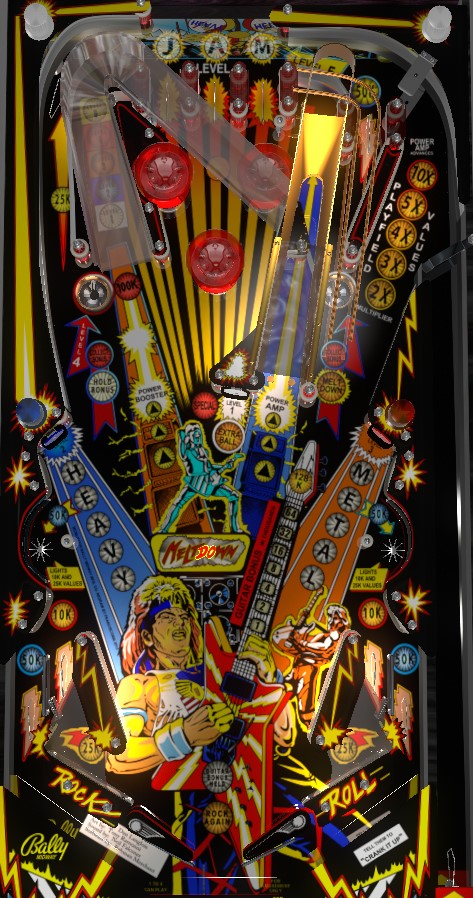

In single ball play, the left ramp is always available to lock balls; lock 5 balls for Meltdown multiball, which starts with a 5x playfield multiplier that can be increased to 10x by making the ramp again with all 5 balls in play. The number of balls in the lock indicates which Level target (center, left, right, left saucer, or top lanes, in that order) will be flashing; make the flashing target to light the left ramp for 100,000 points. Spelling both Heavy and Metal lights the center extra ball. All non-bumper, non-slingshot switches advance bonus; lock 1 ball to light Hold Bonus at the left saucer and complete Heavy or Metal to light a collect.
The skill shot is a precise-power plunge into the lone top lane in the upper right, separate from the 3 main top lanes labelled Jam. The lone top lane scores 50,000 points and redirects the ball into the right saucer. Making the 50,000 top lane unlights it, and going back through it again in normal play when it is not lit scores 10,000 points.
If there are 4 balls in the lock when the ball is plunged, making the right saucer via the 50,000 top lane in this way starts the full 5-ball Meltdown Multiball for free without needing to lock the 5th ball at the left ramp.
Roll through an unlit top lane to light the corresponding letter in Jam. Unlit top lanes score 5,000 points; lit top lanes score 1,000 points. Lane change is available on the right flipper only, allowing lit lane(s) to be rotated by the player. Lighting all 3 Jam top lanes resets them and scores 15,000 points plus increases the bonus multiplier by 1x up to the maximum of 6x.
Rolling through an unlit top lane also advances the respective pop bumper (left for J, bottom for A, right for M). Bumpers start unlit, and score 100 points; advancing a bumper once lights it solidly for 1,000 points; advancing a bumper a second time starts it flashing for 3,000 points. Hitting any bumper rotates which bumper(s) are lit or flashing, so they're not always strongly tied to the top lanes.
Shots to the left Power Booster ramp score 20,000 points (or 100,000 when the ramp is lit) and lock a ball in the Power Amp, which is a quasi-right ramp. There are 3 ways to advance the playfield multiplier, 2 of which are ways to start multiball:
In multiball, the left ramp is always lit for 100,000 points. If there are at least two balls in play, making the left ramp releases all balls in the Power Amp lock regardless of when or how they got there; this means that balls cannot be relocked while multiball is running, and it also means that a multiball started by option 3 above can be "upgraded" by making one shot to the left ramp if there are still balls in the lock. There is no grace period on playfield multipliers after multiball ends, and there is no ball save or quick multiball restart of any kind. Locked Power Amp balls can be stolen in a multiplayer game; on default settings, the game does not manually empty the lock on game over either, so there may be balls in the lock at the beginning of a new game as well.
In addition to all multiball rules: locking 1 ball in the Power Amp on your turn lights the left saucer for Hold Bonus, and locking 4 balls in the Power Amp in a single ball lights the center standup target for a Special.
In single ball play, the game is considered to be in Level 1, 2, 3, 4, or 5 if there are 0, 1, 2, 3, or 4 balls in the Power Amp lock respectively. Each Level makes one game feature flash; the center standup target at level 1, the left standup target at level 2, the right standup target at level 3, the left saucer at level 4, and the top lanes at level 5. Hitting a target while it is flashing (or completing the Jam top lanes, for level 5) lights the next shot to the left ramp for 100,000 points.
Hitting the left standup target awards the next letter in Heavy, scoring 2,000 points for the H, 4,000 for the E, and so on, up to 10,000 points for the Y. The right standup target functions identically, awarding letters in Metal worth increasing value with each hit. Completing Heavy or Metal lights the left or right saucer respectively for Collect Bonus; this bonus collect scores the entire base bonus and does not reset it, but completely ignores the bonus multiplier. Completing both Heavy and Metal lights the center standup target for an extra ball for 8 seconds.
Making the left mini-loop causes the left in lane, the shatz target within the left in lane, and the right mini-loop to be lit. Making the right mini-loop lights the right in lane, right shatz target, and left mini-loop. At the start of the ball, the in lanes and shatz targets are lit, but the mini-loops are not. Making any of these features when they are lit unlights them. Mini-loops score 50,000 points when lit, and 2,000 when not lit. In lanes score 10,000 points when lit, and 2,000 when not lit. Shatz targets score 25,000 points when lit, and 5,000 when not lit. Out lanes always score 50,000 points. The "shatz targets" mentioned here are standup targets located within each in lane that can sometimes be hit simply by holding a flipper up and letting the ball roll up the flipper after it approaches the flipper with speed, but they can also be shot directly with a "shatz"/alley pass maneuver, which is a very late flip that intentionally fires the ball into the opposite in lane.
Every switch in the game that is not a pop bumper or slingshot advances the bonus. Completing the the Jam top lanes increases the bonus multiplier by 1. I believe the max bonus is 6x 255,000 = 1,530,000 points. The base bonus, ignoring the multiplier, can be collected mid-ball by completing Heavy or Metal then shooting the corresponding lit saucer. Bonus multiplier can never be carried from ball to ball. Base bonus can only be held from ball to ball by shooting the left ramp once to light Hold Bonus, then collecting Hold Bonus at the left saucer.
There is a setting that allows a point value to be assigned to Specials, but I have not confirmed what that is. There does not seem to be a corresponding setting that allows extra balls to be worth points instead.
The amount of time that extra ball is lit after completing both Heavy and Metal can be 4, 8, 12, or 16 seconds. Default is 8.
The amount of time it takes for a playfield multiplier to downgrade during single ball play can be set to any multiple of 5 seconds between 10 and 45. Default is 15.
The number of balls you need to lock in the Power Amp in a single turn to light the center standup target's Special can be 2, 3, 4, or 5. Default is 4.
The game can be set to completely empty the Power Amp at the end of a game. By default, it does not do so, allowing locked balls to remain in the Amp until they are used for multiball, even if it takes several games for that to happen.